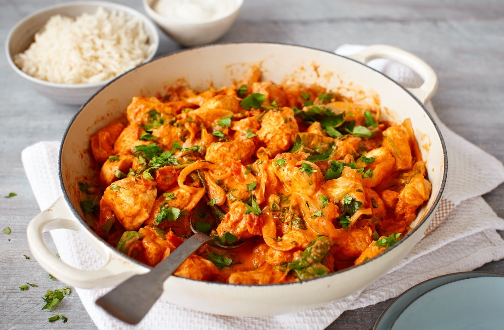

3 heerlijke spicy recepten voor de hele familie

Ingredienten
Voor de marinade
- 500 g kipfilet, in blokjes gesneden
- 200 g Griekse yoghurt
- 2 teentjes knoflook, fijngehakt
- 1 stuk verse gember
- 1 tl garam masala
- 1 tl gemalen komijn
- 1 tl gemalen koriander
- 1 tl kurkuma
- 1 tl kurkuma
- 1 tl zout
- 1 el citroensap
Voor de saus
- 2 el plantaardige olie of ghee
- 1 ui, fijngehakt
- 2 teentjes knoflook, fijngehakt
- 1 stuk verse gember
- 1 blik tomatenblokjes - 400 g
- 1 el tomatenpuree
- 1 tl garam masala
- 1 tl gemalen komijn
- 200 ml kokosmelk of slagroom
- Verse koriander, voor garnering
- Zout en paper naar smaak
Bereiding
- Meng alle ingrediënten voor de marinade (yoghurt, knoflook, gember, kruiden, zout, citroensap) in een grote kom.
Voeg de kipstukjes toe en roer goed, zodat de marinade de kip volledig bedekt.
Laat de kip minstens 1 uur (bij voorkeur 4-6 uur) marineren in de koelkast.
- Verwarm de oven voor op 200°C of gebruik een grillpan.
Plaats de gemarineerde kipstukjes op een bakplaat (of bak ze in een grillpan) en bak ze 10-15 minuten, of tot ze gaar en licht verkoold zijn aan de randen.
Haal de kip uit de oven en zet apart.
- Verhit de olie of ghee in een grote pan op middelhoog vuur.
Voeg de ui, knoflook en gember toe en bak tot de ui zacht en goudbruin is.
Voeg de garam masala, komijn, paprikapoeder, en tomatenpuree toe en bak dit een paar minuten om de smaken vrij te laten komen.
Voeg de tomatenblokjes toe, roer goed en laat het geheel 10 minuten zachtjes koken.
Gebruik een staafmixer om de saus glad te maken, als je een romige consistentie wilt.
Voeg vervolgens de kokosmelk of slagroom toe, roer door en laat de saus nog eens 10 minuten zachtjes koken. Breng op smaak met zout, peper en suiker.
- Voeg de gebakken kipstukjes toe aan de saus en laat het geheel nog 5-10 minuten sudderen, zodat de smaken goed in de kip trekken.
- Garneer met verse koriander en serveer de Chicken Tikka Masala met basmatirijst, naanbrood of chapati.
- Smakelijk!